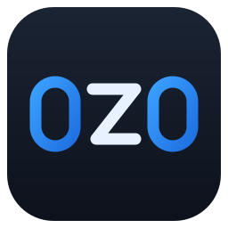
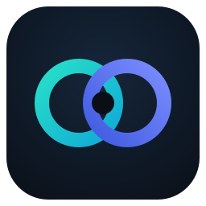
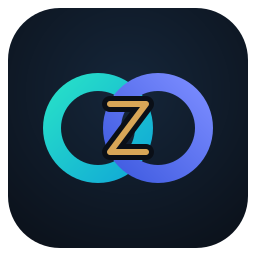
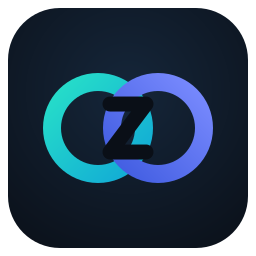
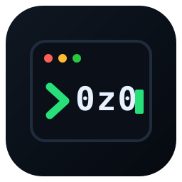

A · "0z0" rounded-tile wordmark

128Clean wordmark: blue zero-rings flanking a white "z". Reads as 0z0 even at small sizes; corporate but friendly.
B · "00" interlocking-rings monogram

128Two overlapping zeros (teal + indigo) — abstract, scales beautifully, infinity/connection vibe. Most "brand-mark" of the three.
★ B2 amber (final candidate)

128Thin muted-amber Z (#d8a657) in a dark moat — visible colour, clean separation from the rings, legible small. Hue is a one-line change if you want it warmer/cooler.
B2 · rings + Z-shaped notch (mono)

128B with a Z carved into the crossing — now reads literally as 0‑z‑0. Keeps the ring identity; best name-legibility of the B family.
B3 · rings + two mirrored Z's
 128
128Symmetric notch (a Z + its mirror = shared bars with crossed diagonals). True left/right symmetry, but reads as an hourglass/X more than as a Z.
C · ">0z0" terminal mark

128Terminal window with a green prompt and 0z0. Strong "software/dev" signal; busiest of the three at 16px.